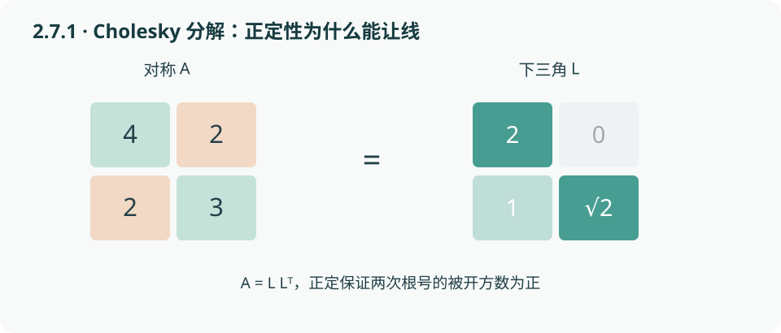

CHAPTER 02 · LINEAR EQUATION SOLVING
Cholesky 分解：正定性为什么能让线性求解更简单
从二次型的严格正性到 LLᵀ、Schur 补与平方根主元，理解高效与失败条件。
实对称矩阵 A=Aᵀ 不一定正定；只有对每个非零向量 x 都满足 xᵀAx>0，才称对称正定（SPD）。这种结构保证无主元 Cholesky 分解 A=LLᵀ 中每个对角根号的被开方量为正，允许使用较少存储和算术量来解线性系统。
一个矩阵已经对称，为什么还要要求正定，才能直接使用 Cholesky？

几何解释：正定二次型没有非零平坦或负方向
函数 E(x)=½xᵀAx−bᵀx 的 Hessian 是 A。当 A SPD 时，E 是严格凸的，唯一驻点 Ax=b 也是全局最小点。若 A 仅对称不定，则 E 沿某些方向可以向下下降，平方根因子不再满足无主元正定 Cholesky 的要求。
SPD 性质不仅在数值上好用，也决定了使用共轭梯度、能量范数分析和协方差矩阵模型时能否直接调用相应算法。
从 2×2 分解推导每一个根号
设 A=[[a,c],[c,d]]，若 a>0 且 ad−c²>0，则 L=[[√a,0],[c/√a,√(d−c²/a)]]，直接可验证 LLᵀ=A。这里第二个根号中的 d−c²/a 是消去第一行后的 Schur 补，也是 SPD 的必要条件之一。
以 A=[[4,2],[2,3]] 为例，L=[[2,0],[1,√2]]，所以 LLᵀ 恢复原矩阵。若将 d 改为 0，则 Schur 补为 −1，Cholesky 失败不是算法“坏掉”，而是正定性假设被破坏。
为什么无需普通 LU 的行交换
SPD 矩阵的所有顺序主子式都为正；每步消去所生成的 Schur 补仍 SPD，因此每步能选到正的对角主元。常见的 Cholesky 实现不需要一般 GEPP 的行交换逻辑。
对 n×n 稠密 SPD 矩阵，Cholesky 主导成本约 (1/3)n³ FLOPs，而一般稠密 LU 约 (2/3)n³。正定结构还允许只存一半输入，但读写与实际内存占用依赖具体实现。
数值计算应区分对称、正定、半正定
只检查 A≈Aᵀ 不能判断 SPD；对称半正定矩阵可能有零特征值，常规 Cholesky 可能在零主元处失败。协方差类或 Gram 矩阵在秩亏时就经常发生这种情况。
数值上对近零特征值十分敏感的矩阵，不能将分解成功直接解释为“每个解分量都准确”；仍需报告条件数和原始残差。
图解与代码如何互相验证
图中左侧对称 A 的非对角元素成镜像，右侧 L 的上三角为零；通过 L 的两次三角求解可重构 x。交互滑块改变 a，固定 c=1、d=2，使用 a>½ 确保 Schur 补为正，实时显示两个对角根号的变化。
NumPy 与 MATLAB 示例都使用库 Cholesky 求解，测试 LLᵀ≈A、L 为下三角、解残差小，并在非 SPD 情况要求明确失败。
交互探索：一个矩阵已经对称，为什么还要要求正定，才能直接使用 Cholesky？
切换解释侧重点，并滑动数值参数，观察清晰定义的模型。
函数 E(x)=½xᵀAx−bᵀx 的 Hessian 是 A。当 A SPD 时，E 是严格凸的，唯一驻点 Ax=b 也是全局最小点。若 A 仅对称不定，则 E 沿某些方向可以向下下降，平方根因子不再满足无主元正定 Cholesky 的要求。
所示为数学模型计算而非实测性能；可使用键盘方向键调整滑块。